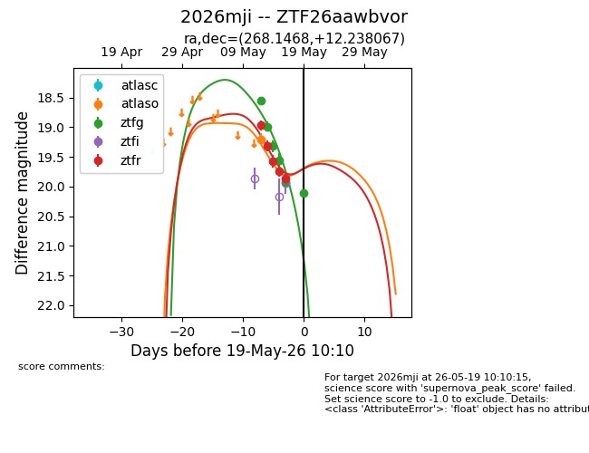
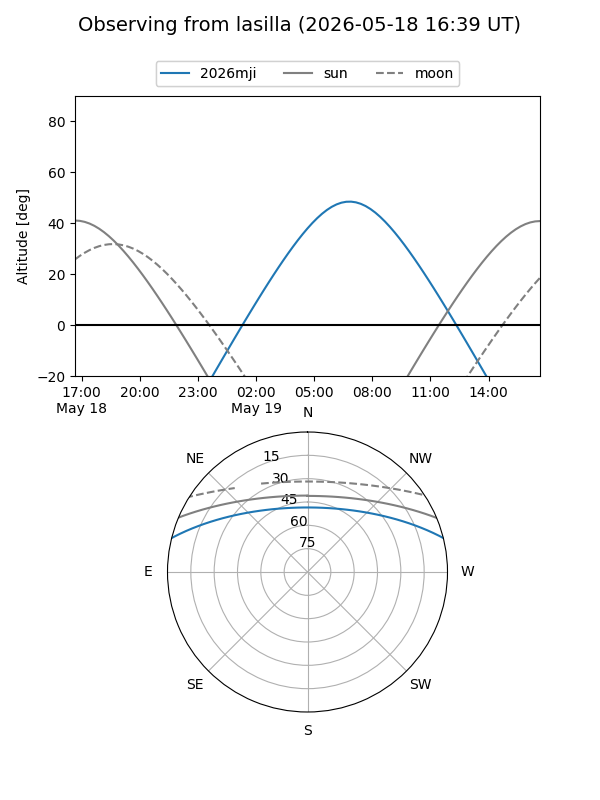
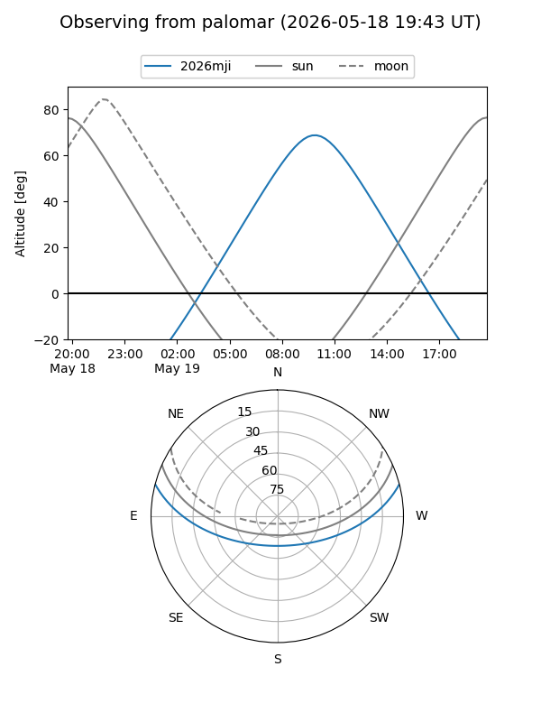
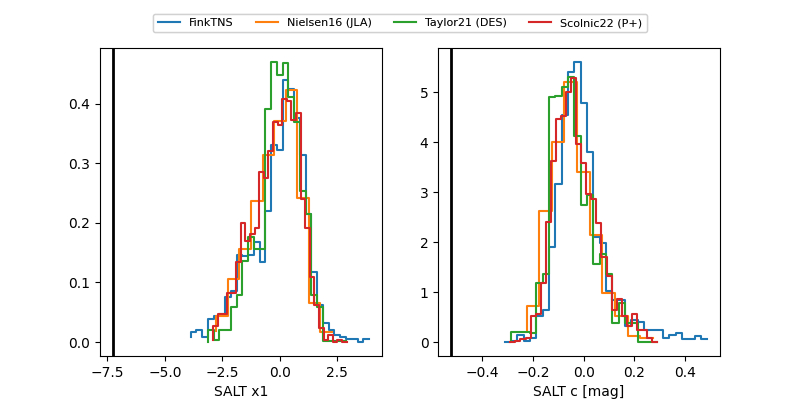

2026mji
Target 2026mji at 2026-05-19 10:11
Aliases and brokers:
FINK: link
Lasair: link
ALeRCE: link
TNS: link
YSE: link
alt names
ZTF26aawbvor (ztf,fink_ztf)
2026mji (tns,yse)
Coordinates:
equatorial (ra, dec) = 268.1468,+12.23807
equatorial (HMS+DMS) = 17:52:35.24,+12:14:17.04
galactic (l, b) = (37.4975,+18.51495)
Flags:
Photometry:
last atlaso=19.20, ztfg=20.10, ztfr=19.86
1 atlaso, 6 ztfg, 5 ztfr detections
Lightcurve

Visibility


Additional plots
